Project Type
Class Final Project
Role
Project Lead/Researcher & Designer
Timeline
August - December 2025
Team
3 Designers
My Contribution
I led our team through the research and design space definition stages, contributing to brainstorming and ideation of the final concept. I conducted user interviews and facilitated expert evaluation sessions both within and beyond Cornell. This project is ongoing, with further insights and iterations to come.
Project Overview
HopIn is a design project that reimagines community ride-sharing in Ithaca. The platform promotes affordable, inclusive, and environmentally conscious transportation by connecting riders and drivers through proximity and trust. Our team aims to balance convenience with social good—building a system that supports accessibility and strengthens local community ties. This project was completed as part of Cornell’s INFO 4420 - HCI Studio.
Research Artifacts
Design Landscape Definition
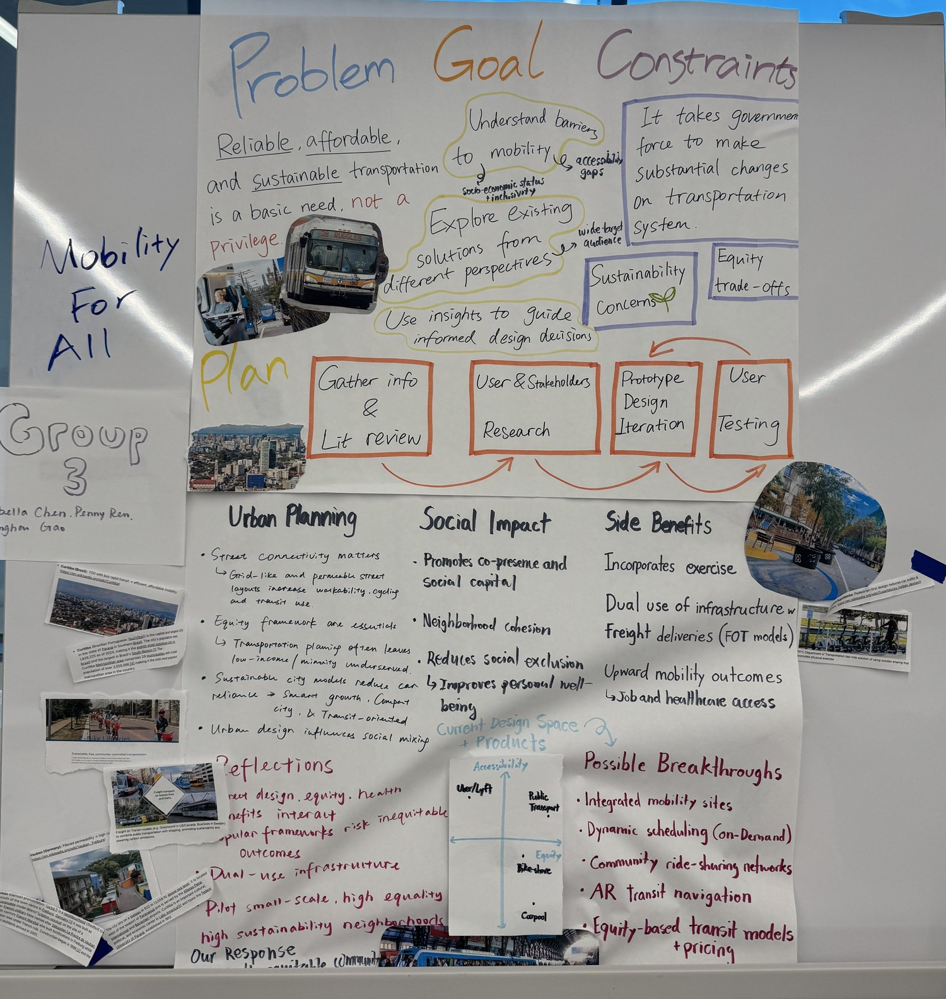
Idea Selection
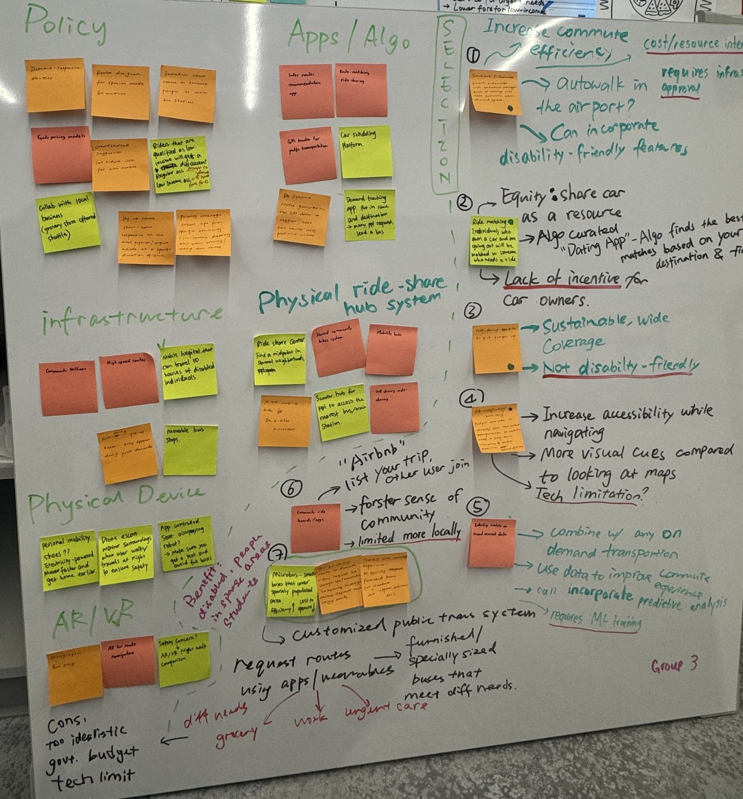
Preliminary Study on Stakeholders
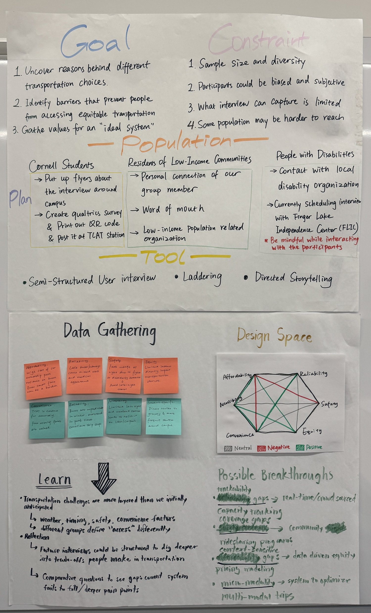
Paper Prototype and Expert Evaluation Protocol
Stakeholders Interview
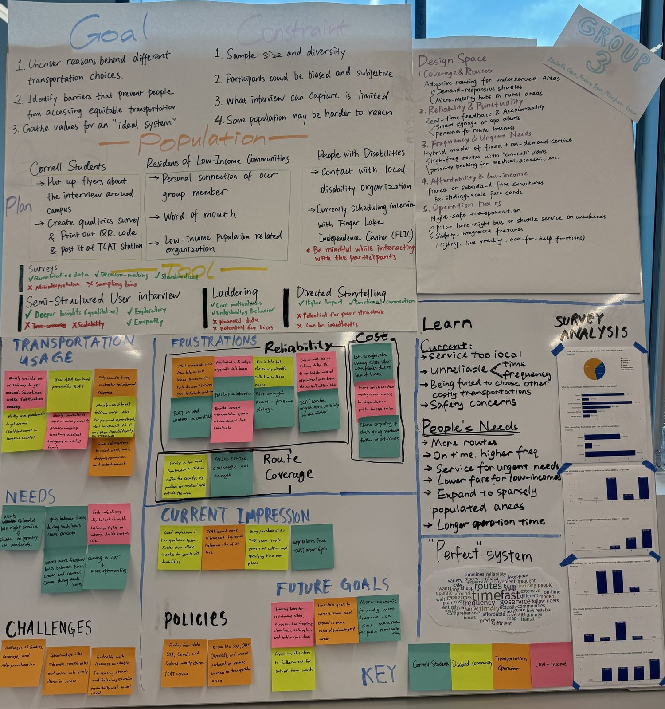
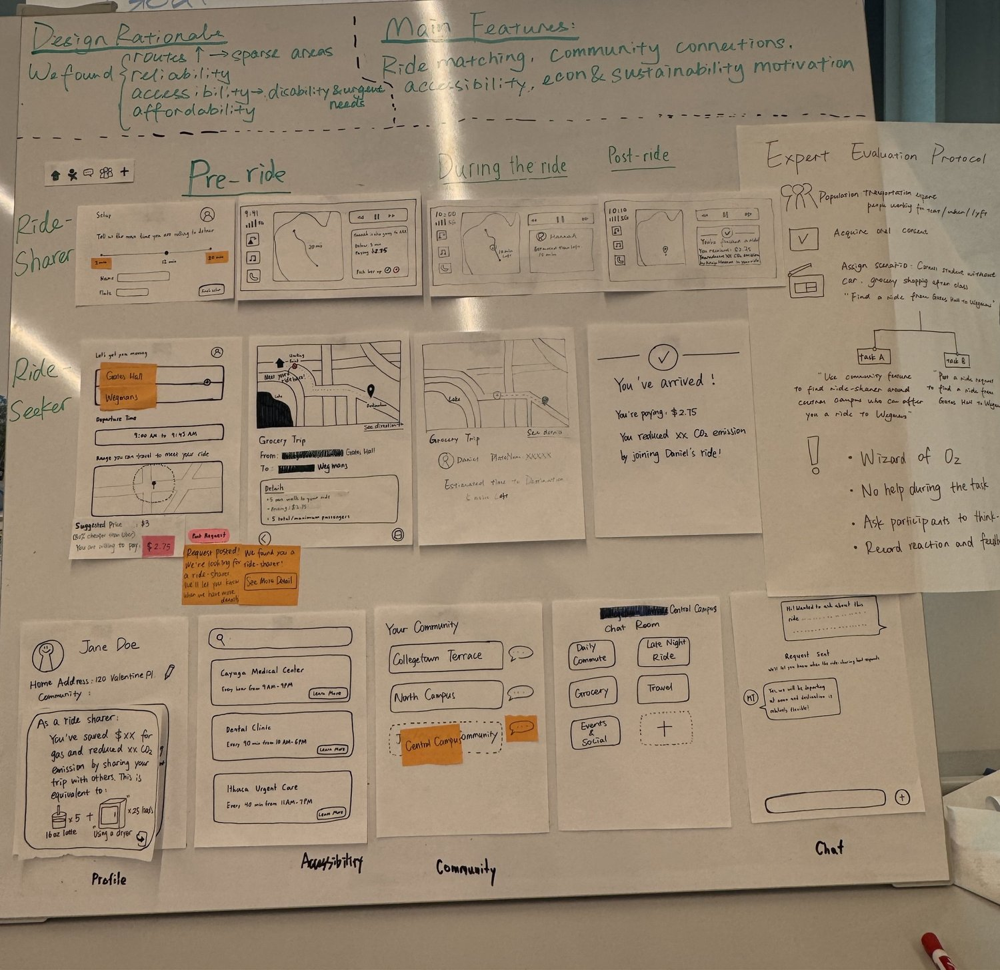
Visuals
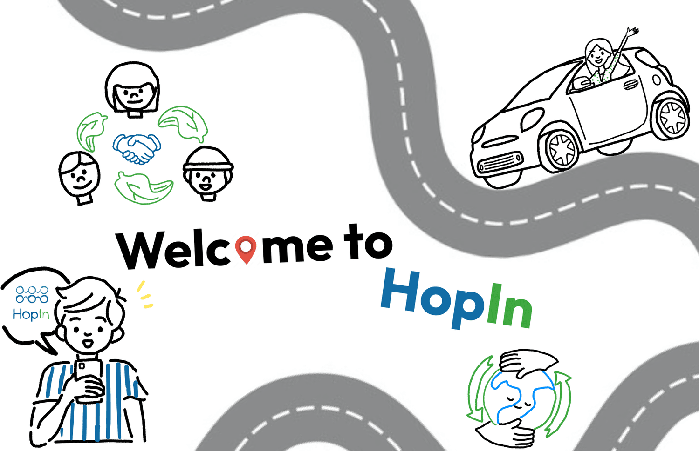
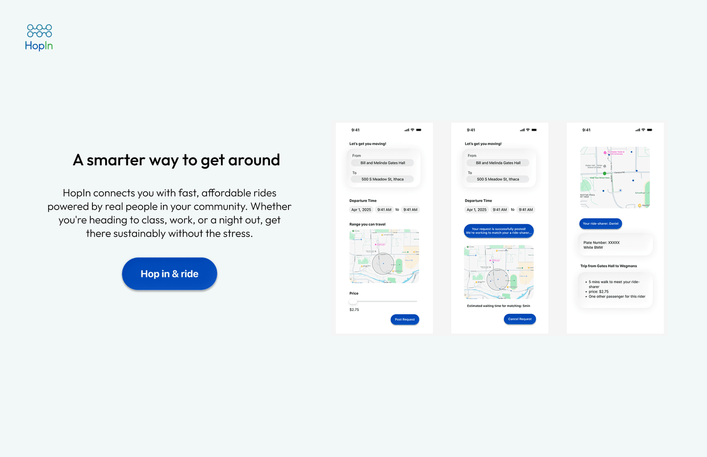
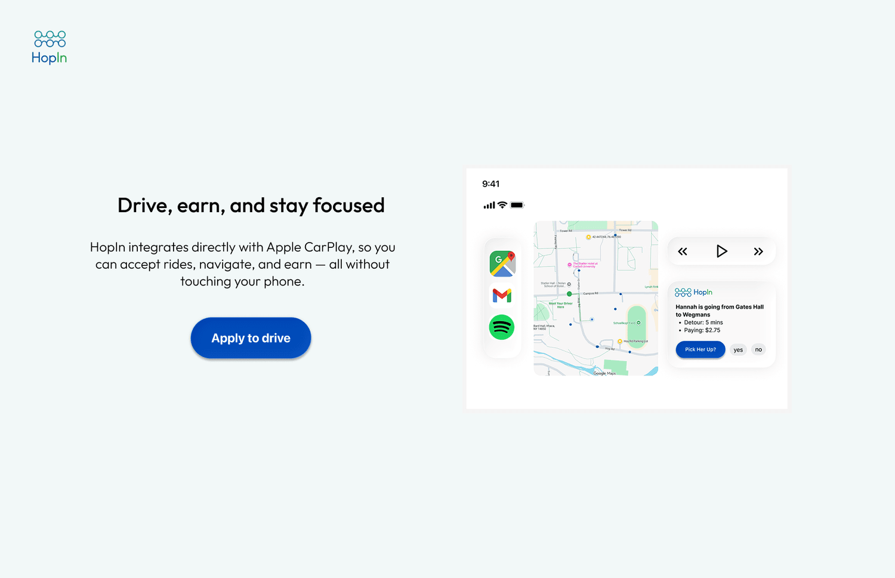
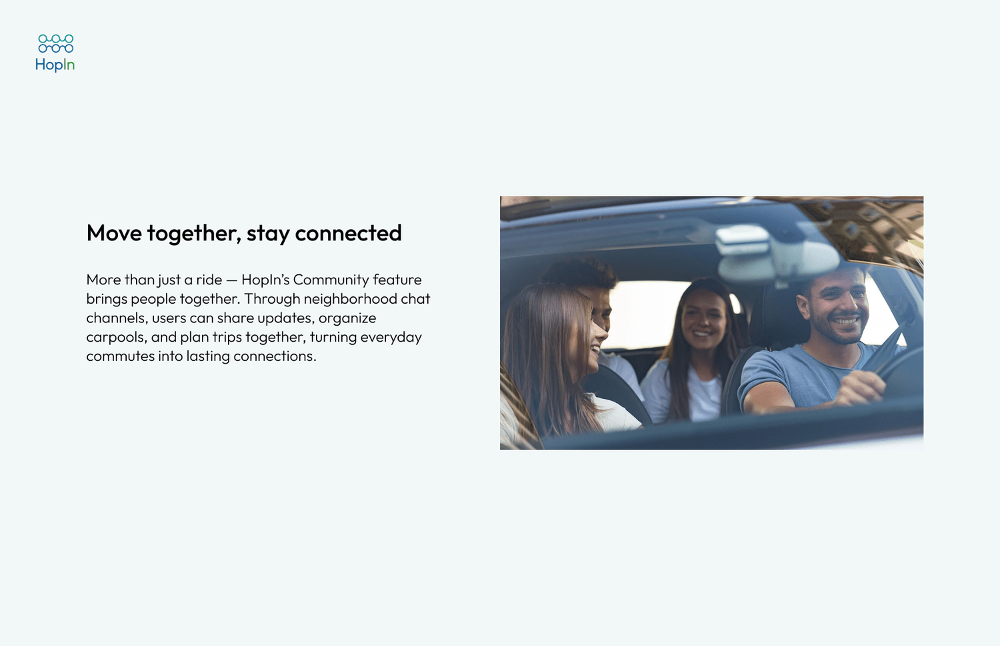
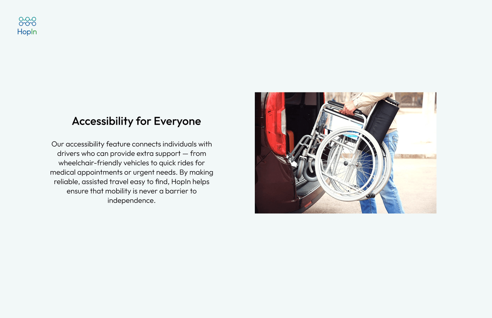
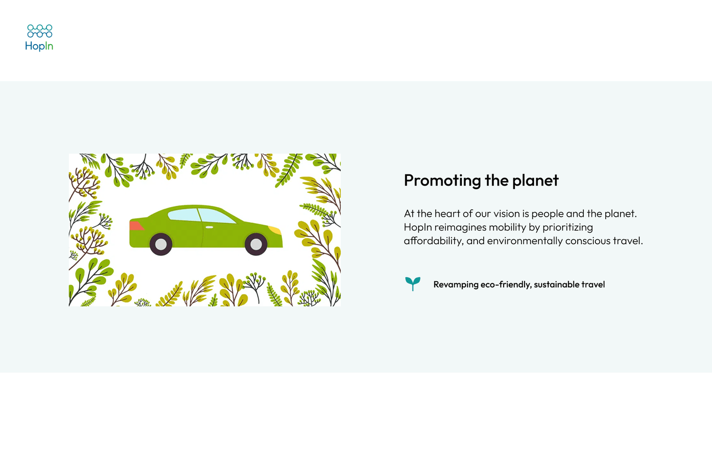
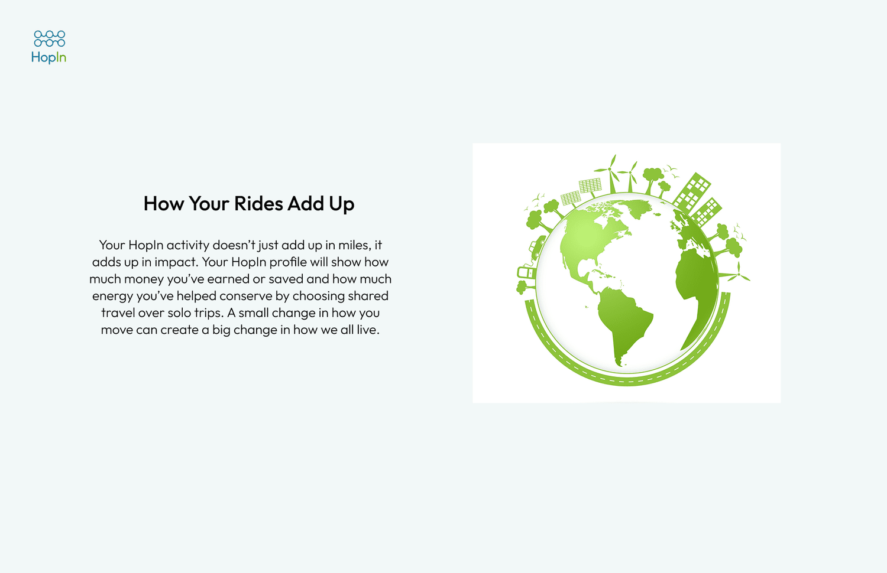
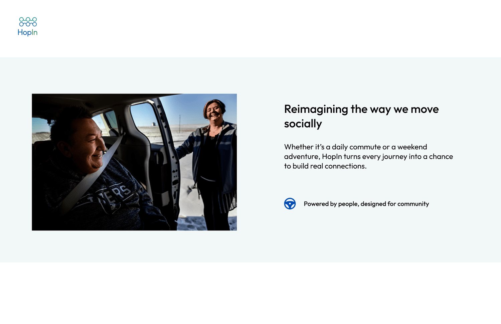
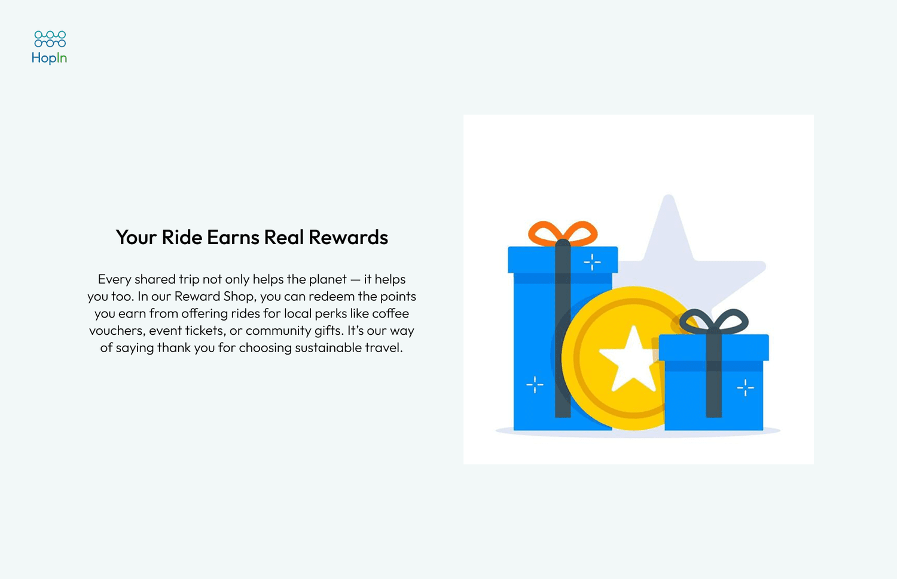